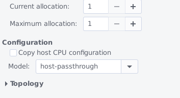

@Ibr0z
Hello
-
What are the exact CPU settings for your Whonix-15 Workstation settings? In virt-manager, under “CPU” tab, you should have only 1 CPU and CPU model set as host-passthrough (see screenshot below)

If it’s not the case, modify accordingly and try it out. Does it still freeze? -
Please copy your Workstation .xml file content (on your host do
sudo cat /etc/libvirt/qemu/Whonix-Workstation.xmland copy everything here). -
Does the Whonix-Gateway work correctly? Did you also update it to Whonix 15 ?
-
If you create a new VM from scratch using the Workstation disk, does it also freeze (you can make a temporary copy of the disk, and do not forget to remove any virtual network hardware from your newly created test machine before booting it to avoid any leak!)?